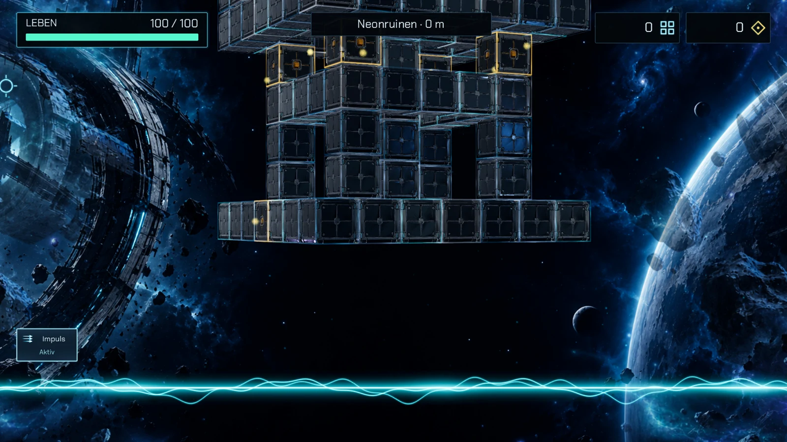

ZERLEGE DAS UNBEKANNTE
ASTRABRUCH

Ein Treffer. Eine Kettenreaktion.
Bring kosmische Würfeltürme zu Fall.
Ziele auf die Verbindungen, kombiniere deine Fähigkeiten und sammle die Bruchstücke. Sechs Sektoren warten auf dich.
Testversion herunterladen
BEREIT ZUM START
Wähle dein System.
Kostenlose spielbare Vorabversion. Das Spiel befindet sich in Entwicklung.
IN WENIGEN SCHRITTEN IM SPIEL
Herunterladen. Entpacken. Spielen.
Linux
Archiv vollständig entpacken und Astrabruch.x86_64 starten. Falls nötig, in den Dateieigenschaften „Als Programm ausführbar“ aktivieren.
Benötigt einen aktuellen Grafiktreiber mit Vulkan-Unterstützung.
Windows
ZIP vollständig entpacken und Astrabruch.exe starten. Das Paket ist derzeit nicht mit einem Windows-Zertifikat signiert; SmartScreen kann deshalb einen Hinweis anzeigen.
Benötigt einen aktuellen Grafiktreiber mit Vulkan-Unterstützung.
macOS
ZIP entpacken und Astrabruch.app in „Programme“ verschieben. Ein Paket unterstützt Intel und Apple Silicon.
Die Testversion ist ad-hoc signiert und noch nicht von Apple notarisiert. Wird sie blockiert, nach dem Öffnungsversuch unter „Systemeinstellungen → Datenschutz & Sicherheit“ die Option „Dennoch öffnen“ verwenden, sofern angeboten.
Android
APK auf ein Android-Gerät mit ARM64-Prozessor herunterladen und öffnen. Bei Bedarf die Installation aus dieser Quelle für deinen Browser oder Dateimanager erlauben.
Das Spiel läuft im Querformat. Echte Gerätetests und weitere Optimierung stehen noch aus.
Am PC: Mit der Maus zielen, per Klick schießen. Esc öffnet die Pause. Die UI-Größe lässt sich in den Einstellungen anpassen.